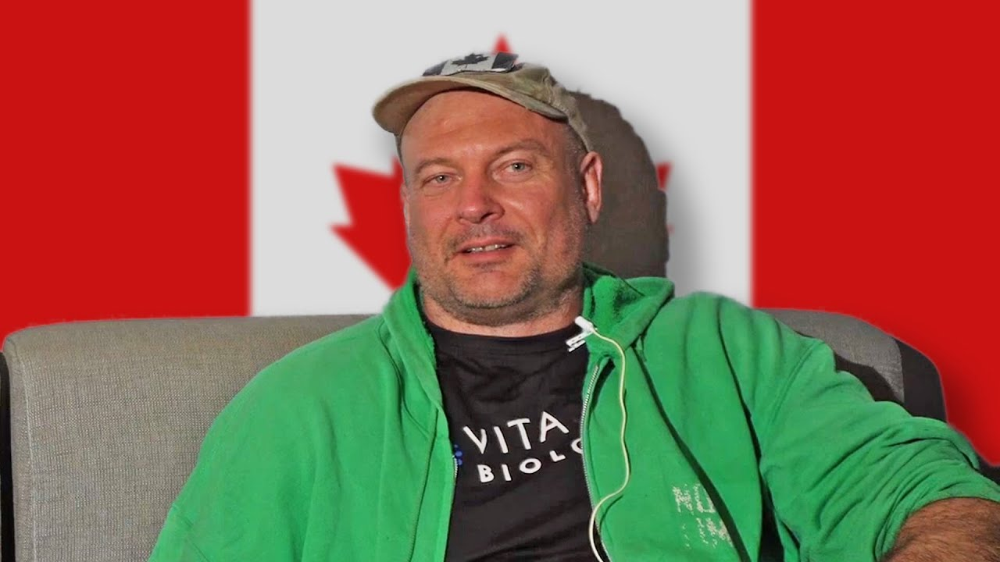

Militaire canadien, meilleur tacticien mondial, invité récent de Joe Rogan. Tout ce qu'il faut comprendre sur l'homme qui a redéfini le bras de fer — et les trois règles qu'il transmet depuis des années.

Devon Larratt est né le 24 août 1975 à Sherbrooke, Québec, et a grandi en Colombie-Britannique. Il a servi vingt ans dans les Forces armées canadiennes — dont une affectation à la Force opérationnelle interarmées 2, l'unité des opérations spéciales du Canada. C'est dans ce contexte d'exigence absolue qu'il a forgé son rapport à la compétition et au dépassement.
Aujourd'hui, à près de 50 ans, il occupe la deuxième place mondiale en superpoids — derrière Levan Saginashvili uniquement. Il se bat contre des adversaires plus jeunes, plus lourds, et continue de progresser. Sa longévité est en elle-même un message : la technique et l'intelligence tactique ne vieillissent pas comme la force brute.
Ses super-matchs, documentaires et sa présence en ligne ont rendu le bras de fer viral bien au-delà de son cercle habituel. Larratt est, à lui seul, la plus grande vitrine que le sport ait jamais eue. Suivre Devon sur Instagram @devlarratt →
Contexte : Larratt a commencé la compétition sérieuse après 25 ans. Sa progression vers le sommet mondial à partir d'un départ tardif est l'une des trajectoires les plus atypiques du sport de force — et la preuve directe que la technique prime sur le physique brut.
Ce n'est pas la force brute, ni la taille, ni l'âge. C'est l'accumulation de cinq caractéristiques que personne d'autre sur le circuit ne réunit au même niveau.
Ces règles, Devon Larratt les enseigne dans chaque séminaire depuis des années. Elles s'appliquent à la première séance et au plus haut niveau mondial — elles accompagnent l'athlète tout au long de sa progression, sans jamais devenir obsolètes.
La force est la fondation. Pas la force brute généraliste — la force spécifique au bras de fer : prise, poignet, avant-bras, dorsaux, épaule. Sans cette base, aucune technique ne peut s'exprimer pleinement. Les règles 2 et 3 n'ont de valeur que si la première est en place.
Retenir le mouvement de ton adversaire — sa main, sa position — t'épuise sur ses points forts au lieu de jouer les tiens. Exemple concret : essayer de retenir la main de ton adversaire hors strap pour l'empêcher de glisser en top roll. S'il est malin, il trouvera toujours un moyen de reprendre l'avantage. Cette règle dit de jouer sur ton propre terrain — rester maître de la situation, ne jamais te laisser embarquer dans la position qu'il veut t'imposer.
C'est la règle avec laquelle tu progresseras le plus tout au long de ton parcours — derrière sa formulation simple se cache toute la complexité du sport. Elle signifie : exploiter toutes les règles de positionnement à la table, jouer avec ce qui est permis, connaître les limites de l'autorisé, comprendre l'expérience des arbitres, maîtriser le placement à la table, et reconnaître les points forts de ton adversaire dès la prise de main pour s'adapter instantanément.
Ces trois règles ne sont pas des conseils techniques isolés — ce sont des principes de mindset et d'approche. C'est pourquoi Devon Larratt, deuxième mondial en superpoids à presque 50 ans, continue de les enseigner comme fondement de tout le reste. Elles s'appliquent au premier entraînement exactement comme au match le plus important de carrière.
Des confrontations qui ont défini des époques. Chacun de ces matchs a dit quelque chose d'important sur Larratt — et sur le bras de fer en général.
East vs West met en scène les meilleurs brasseurs mondiaux dans des matchs à 5 ou 7 rounds, souvent décisifs pour les titres et classements internationaux. Chaque édition — Arlington, Tbilissi, Vienne, Dubai — est un événement suivi en direct par des centaines de milliers de spectateurs.
Devon Larratt est une figure permanente du circuit EVW. Quand il ne monte pas sur la table, il est dans les coulisses — conseillant d'autres athlètes sur leur stratégie, décortiquant les matchs en direct, préparant des plans de rounds. Sa présence élève systématiquement le niveau d'un événement.
Le 5 juin 2026, Devon Larratt était l'invité du Joe Rogan Experience #2510 — le podcast le plus écouté au monde. Une interview très attendue qui a largement dépassé le cercle du bras de fer : en quelques jours, l'épisode dépasse 1,7 million de vues, exposant le sport à une audience mondiale.
Pendant 2h42, Devon y parle de sa carrière, de ses adversaires, de sa philosophie de compétition, de ses années dans les forces spéciales canadiennes — et de ce qui fait du bras de fer une discipline à part entière. C'est probablement l'épisode le plus important pour la visibilité du sport.
Les trois règles de Larratt — être fort, ne jamais accepter ce qu'on vous donne, ne jamais tenir — sont exactement ce qu'on travaille à l'ACS Strassen. Le top roll, la lecture d'adversaire, l'explosivité de démarrage. Ce ne sont pas des concepts réservés à l'élite mondiale : c'est ce qu'on apprend dès la première séance.
Première séance gratuite, aucun niveau requis. On commence par les fondamentaux — les mêmes que Larratt enseigne.
Lire aussi : Comment gagner au bras de fer · Technique de prise · Champions mondiaux